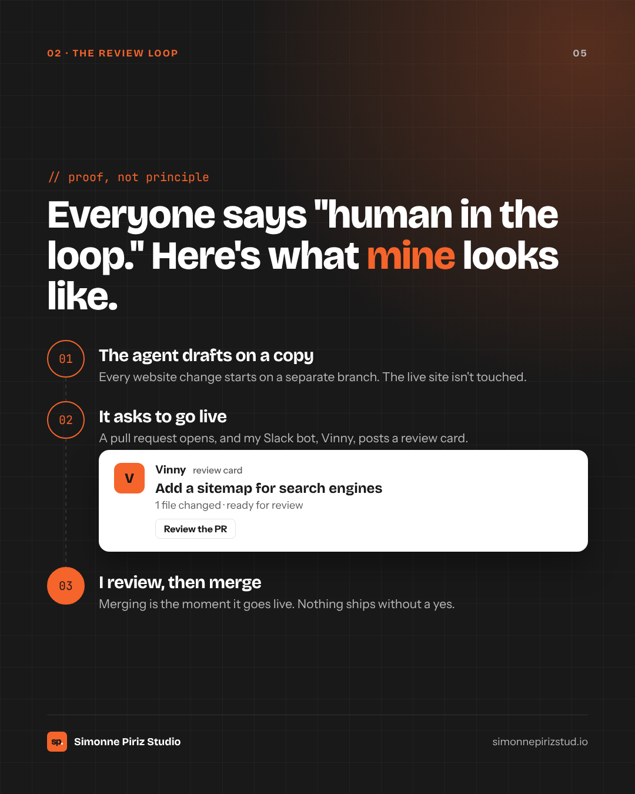
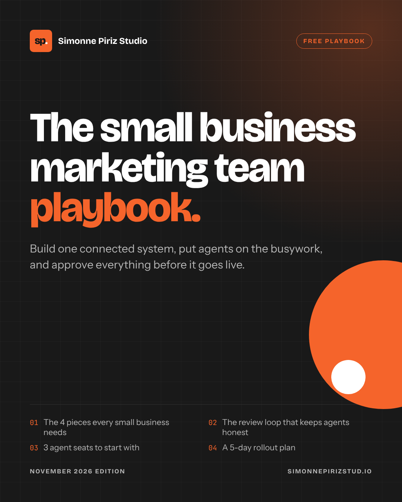
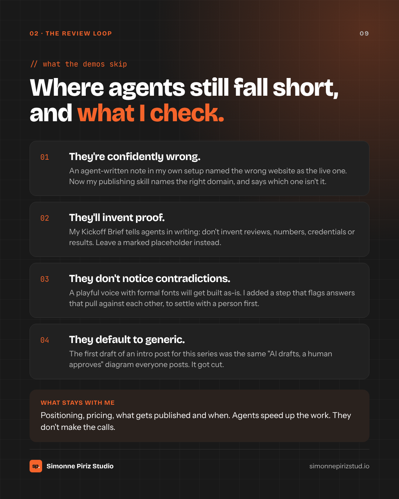

## Step 2: Branch
Say: "Making a branch - a separate
copy of the site where this change
can wait for review without
touching the live site."
## Step 3: Commit
Say: "Committing - this saves a
snapshot of the change with a
short label, like a save point."
## Step 4: Push
Say: "Pushing to GitHub - this
uploads the branch. The live site
doesn't change yet."
## Step 5: Pull request
Say: "Opening a pull request -
this asks for the change to be
added to the live site. Vinny will
post a review card for it in Slack."
## Step 6: Review and merge
Stop here and let Simonne review.
Only merge it yourself if she asks.
## Step 7: Confirm it's live
Check the deployed page against
the live URL before saying done.
## Step 2: Branch
Say: "Making a branch - a separate
copy of the site where this change
can wait for review."
Build from this brief.
Use the client's own words where
quoted.
Do not invent reviews, numbers,
credentials or results; leave a
clearly marked placeholder instead.
Build in the client's own accounts.
Ask before guessing on anything
under Open items.
Before building, note where
answers pull against each other
(for example, a playful voice with
formal fonts) and list them as
questions to settle with the client.
Build from this brief.
Use the client's own words where
quoted.
Do not invent reviews, numbers,
credentials or results; leave a
clearly marked placeholder instead.
Ask before guessing on anything
under Open items.
Before building, note where
answers pull against each other
and list them as questions.
Agents handle: drafting updates,
new pages, and routine fixes.
I handle: strategy, design
direction, and final review.
Agents handle: topic research,
first drafts, and scheduling.
I handle: editing for accuracy
and voice, and the strategy behind
what gets written.
Agents handle: planning,
drafting, and scheduling.
I handle: voice, review, and
what to post and when.
Agents do the heavy lifting.
A human is accountable for
every result.
Agents handle: drafting updates,
new pages, and routine fixes.
I handle: strategy, design
direction, and final review.
Agents handle: topic research,
first drafts, and scheduling.
I handle: editing for accuracy
and voice.
Agents do the heavy lifting.
A human is accountable for
every result.
The small businessmarketing teamplaybook.
The exact system I run my own studio on, including where agents still fall short.



Free · 11 pagesLink in the first comment